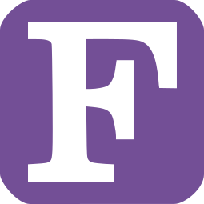

1957 — Fortran
Один из первых языков высокого уровня, разработан для научных расчетов.
Пример кода
PRINT *, 'Hello, world!'
От машинного кода до современных языков программирования
Один из первых языков высокого уровня, разработан для научных расчетов.
PRINT *, 'Hello, world!'
Язык для обработки списков, популярный в исследованиях ИИ.
(print "Hello, world!")
Учебный язык с сильной типизацией, использовался для обучения структурному программированию.
program HelloWorld;
begin
writeln('Hello, world!');
end.
Язык с сильной типизацией для систем с высокими требованиями надежности (авиация, космос).
with Ada.Text_IO; use Ada.Text_IO;
procedure Hello is
begin
Put_Line("Hello, world!");
end Hello;
Объектно-ориентированный язык, расширение C.
#include <iostream>
int main() {
std::cout << "Hello, world!" << std::endl;
return 0;
}
Универсальный язык с простой синтаксисом, популярен в науке, веб-разработке и AI.
print("Hello, world!")
Платформонезависимый язык для корпоративных и мобильных приложений.
public class Main {
public static void main(String[] args) {
System.out.println("Hello, world!");
}
}
Язык для создания динамических веб-страниц, широко используется для серверной части.
<?php
echo 'Hello, world!';
?>
Язык с упором на простоту и продуктивность, известен благодаря фреймворку Rails.
puts 'Hello, world!'
Основной язык веб-разработки, работает в браузерах.
console.log('Hello, world!');
Язык от Google с упором на простоту и параллелизм.
package main
import "fmt"
func main() {
fmt.Println("Hello, world!")
}
Безопасный и быстрый системный язык с управлением памятью без сборщика мусора.
fn main() {
println!("Hello, world!");
}
Современный язык для JVM и Android, совместим с Java, улучшает удобство и безопасность кода.
fun main() {
println("Hello, world!")
}
| Язык | Год | Типизация | Популярность | Основное применение |
|---|---|---|---|---|
| Fortran | 1957 | Статическая | ★★★☆☆ | Научные вычисления |
| Lisp | 1958 | Динамическая | ★★★☆☆ | Искусственный интеллект |
| Pascal | 1970 | Статическая | ★★☆☆☆ | Обучение программированию |
| Ada | 1980 | Статическая | ★★☆☆☆ | Системы реального времени |
| C++ | 1983 | Статическая | ★★★★☆ | Системное и прикладное ПО |
| Python | 1991 | Динамическая | ★★★★★ | AI, скрипты, web |
| Java | 1995 | Статическая | ★★★★☆ | Корпоративные приложения |
| PHP | 1995 | Динамическая | ★★★☆☆ | Web-сервер |
| Ruby | 1995 | Динамическая | ★★★☆☆ | Web-фреймворки (Rails) |
| JavaScript | 1995 | Динамическая | ★★★★★ | Web-фронтенд |
| Go | 2009 | Статическая | ★★★☆☆ | Серверное и сетевое ПО |
| Rust | 2010 | Статическая | ★★★★☆ | Системное ПО |
| Kotlin | 2011 | Статическая | ★★★☆☆ | Android, backend |